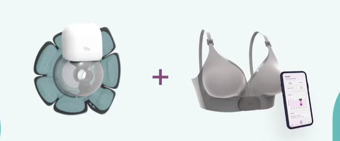
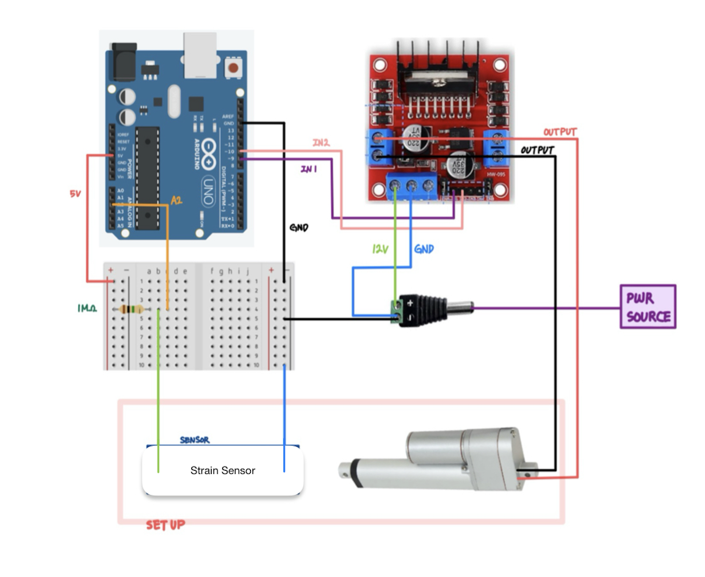
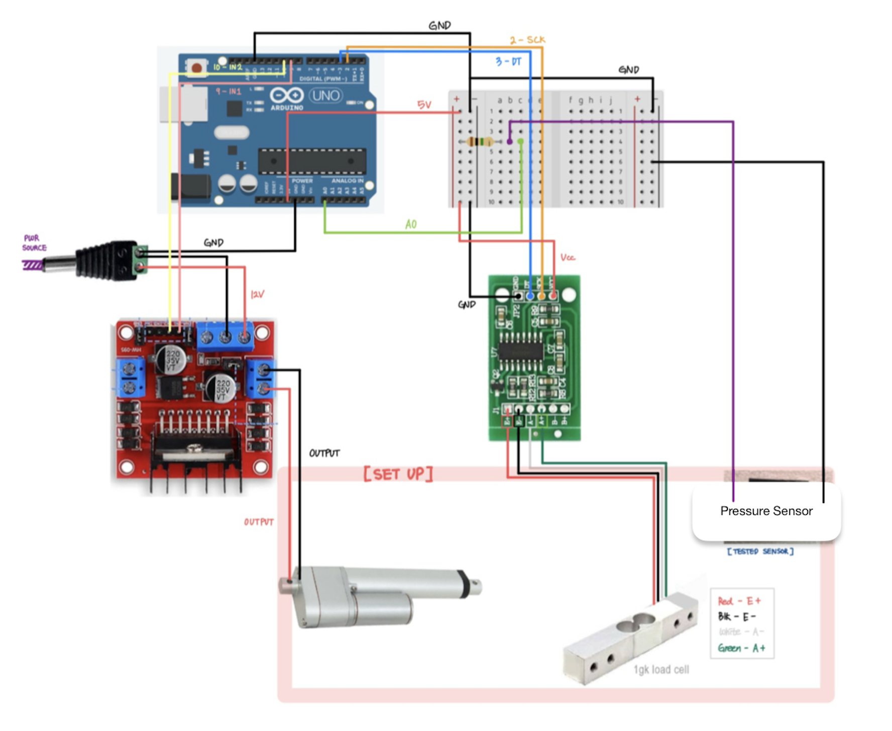

Lilu Inc. - Maternal Healthcare Startup
Lilu Inc. is a small startup which aims to innovation and revolutionize the maternal healthcare space, specifically with respect to breastfeeding and pumping health and care. I have been working at Lilu Inc. for the past year and a half where I began as an Engineering Intern and am now the Lead Product Engineer. I have contributed to the development of Lilu Inc.'s smart bra and wearable breast pump, leading the team with my expertise in rapid prototyping, CAD expertise (most notably in SolidWorks), and electro-mechanical planning and assembly.
Smart Bra Contributions - Engineering Intern
As an Engineering Intern at Lilu Inc., I worked on the early-stage development of a Smart Sensing Bra system intended to detect pressure and strain signals during lactation. Through extensive research I identified potential flexible and fabric pressure and strain sensors. To characterize the performance of these sensors, I designed custom test jigs to test accuracy, repeatability, and sensitivity.
Wearable Breast Pump Contributions - Engineering Intern & Lead Product Engineer
As the Engineering Intern at Lilu Inc., I worked on the early-stage development of our wearable breast pump including the following tasks:
- Worked closely with the Industrial Designer to Translate Rhino CAD designs into SolidWorks. I also implemented engineering tolerances for FDM and SLA printing and overall design for manufacturing requirements.
- Met consistently with the CEO, Industrial Designer, and Biomedical Engineer to develop concepts and designs to best solve the breastfeeding and pumping needs of mothers.
- 3D printed prototype parts via FDM and SLA to assess overall form factor, aesthetics and functionality.
- Lead the development and iterative design process.
- Conduct validation and verification testing.
- Oversee operations with our manufacturers in China and the US.
Smart Bra Custom Test Jigs
Strain Jig Design & Protocol
To evaluate strain sensor performance, I designed a custom jig where one end of the sensor was zip-tied to a fixed metal base and the other to the retractable piston of a linear actuator. Care was taken to ensure the sensor remained taut without pre-strain. The linear actuator, powered and controlled by an Arduino Uno and motor driver, retracted at a constant 10 mm/s, elongating the sensor over time. A simple voltage divider circuit enabled real-time voltage readings across the sensor, captured via the Arduino analog pin and converted from raw values to voltages within the sketch. Simultaneously, elongation was calculated based on elapsed time and actuator velocity, providing a continuous mapping of strain to output voltage. Both datasets were logged in tandem for downstream analysis.
Pressure Jig Design & Protocol
To characterize pressure sensor performance, I developed a custom test jig featuring a linear actuator, syringe, and water receptacle to apply a controlled compressive load. As the actuator extends, water is displaced from the syringe into the receptacle, exerting a load on the pressure sensor; retraction removes the load. A load cell placed beneath the sensor serves as a ground truth reference, capturing the actual force applied. Using an Arduino Uno, I controlled the actuator’s motion and simultaneously logged real-time load cell data and pressure sensor voltage outputs. This setup enabled continuous cycling and synchronized data collection for downstream analysis.
Leading Product Development
Development & Design
Leading the development and design of the wearable breast pump includes the following responsibilities:
- Implementing key design changes within detailed SolidWorks assemblies
- Ensuring proper GD&T and design for manufacturing is present in all prototype components.
- Sourcing & testing miniature pneumatic DC motor pumps for both inflation and suction.
- Sourcing food safe materials for our manufactured parts which come into contact with breast milk and the mothers' skin.
- Designing FDM printed silicone molds and casting silicone rubber parts in-house utilizing 2 part mixtures and proper degassing procedures.
- Soldering various electrical connections between electro-mechanical components and PCB's.
- Creating and updating design documentation to record key changes and progression towards final prototype.
Verification & Validation Testing
Conducting verification and validation testing involves the following responsibilities:
- Pneumatic pressure testing involving miniature vacuum and inflation DC motor pumps, solenoid valves, and silicone tubing.
- Writing custom Arduino sketches and sourcing electro-mechanical components and sensors to construct custom test jigs.
- Verify a successful and reliable suction seal between plastic and silicone rubber parts.
- Ensuring prototype exhibits a watertight seal to ensure a clean and efficient milk collection process.
- Test and simulate user experience, including assembly and disassembly, cleaning, and emptying of milk.
- Design and conduct beta user testing sessions with mom's to validate our prototype's look and feel, functionality and overall user experience.
- Creating and maintaining proper documentation to track testing results and formulate solutions.
- Process testing results within Python to analyze trends to inform design changes.
Manufacturing Vendors Management
Managing our vendors for our manufacturing needs requires the the following responsibilities:
- Meet and coordinate with PCB vendors with necessary electromechanical components and firmware required for integration.
- Maintain proper documentation of material needs and properties for manufacturers to reference.
- Communicate design changes, budgeting, order quantities and quality assurance needs to our manufacturers.
- Oversee lead times to ensure alignment with production schedules and timelines.